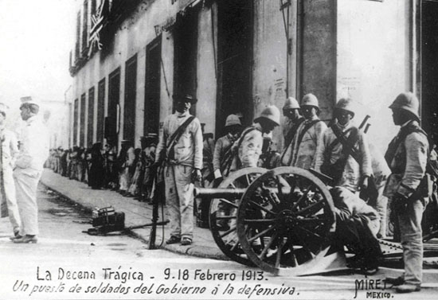
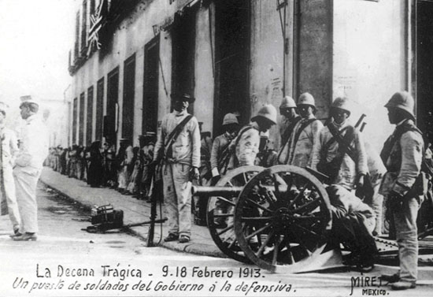
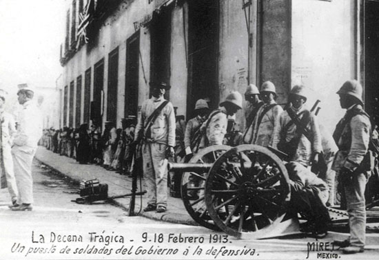

22 de mayo 1909
Se crea el Partido Nacional Antirreeleccionista(PNA) por iniciativa de Francisco I. Madero.

Se crea el Partido Nacional Antirreeleccionista(PNA) por iniciativa de Francisco I. Madero.